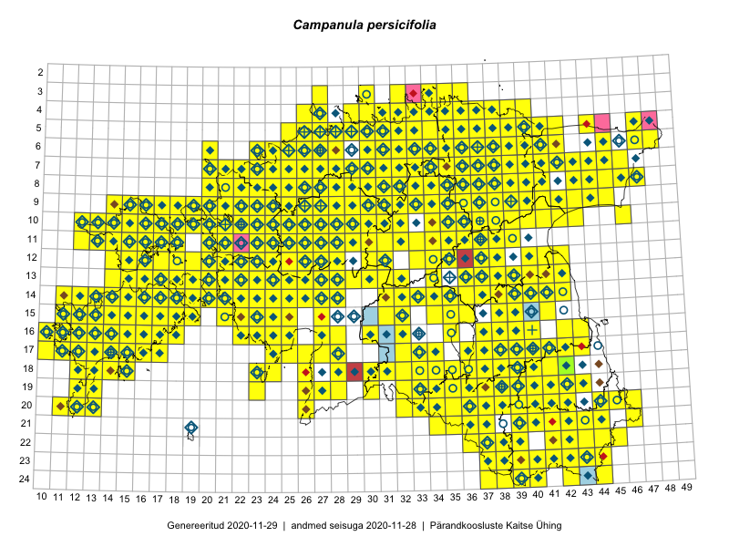

Campanula persicifolia
Uuendatud: 2016-12-01
Kaardile koondatud taksonid: Campanula persicifolia L.

Kaart põhineb 832 kirjel.
Kuvatud viited 20 esimesele andmebaasikirjele, ülejäänud PlutoFis
- Malle Leht: 2015-07-09: : ala
- Toomas Kukk, Thea Kull, Timo Luhamäe, Ott Luuk, Peedu Saar: 2015-06-29: 14-17: ala
- Toomas Kukk, Eerik Leibak: 2015-08-09: 13-15: ala
- Peedu Saar, Liina Oja: 2015-05-22: 19-30: ala
- Rein Kalamees: 2015-06-05: 05-32: ala
- Malle Leht: 2015-08-02: : ala
- Peedu Saar, Liina Oja: 2015-05-15: 16-23: ala
- Peedu Saar, Toomas Kukk: 2015-05-28: 10-15: ala
- Peedu Saar, Toomas Kukk: 2015-05-27: 09-15: ala
- Peedu Saar, Toomas Kukk: 2015-05-27: 09-16: ala
- Toomas Kukk, Eerik Leibak: 2015-08-09: 14-15: ala
- Toomas Kukk, Eerik Leibak: 2015-08-08: 15-18: ala
- Toomas Kukk, Peedu Saar: 2015-08-05: 20-11: ala
- Toomas Kukk, Peedu Saar, Kersti Tambets, Sten Mander, Janika Sammasto: 2015-08-05: 17-14: ala
- Toomas Kukk, Thea Kull, Timo Luhamäe, Ott Luuk, Peedu Saar: 2015-06-28: 13-26: ala
- Toomas Kukk, Eerik Leibak: 2015-08-12: 10-17: ala
- Toomas Kukk, Eerik Leibak: 2015-08-10: 09-14: ala
- Toomas Kukk, Eerik Leibak: 2015-08-10: 13-14: ala
- Toomas Kukk, Eerik Leibak: 2015-08-10: 13-15: ala
- Toomas Kukk, Peedu Saar: 2014-09-25: 07-42: ala